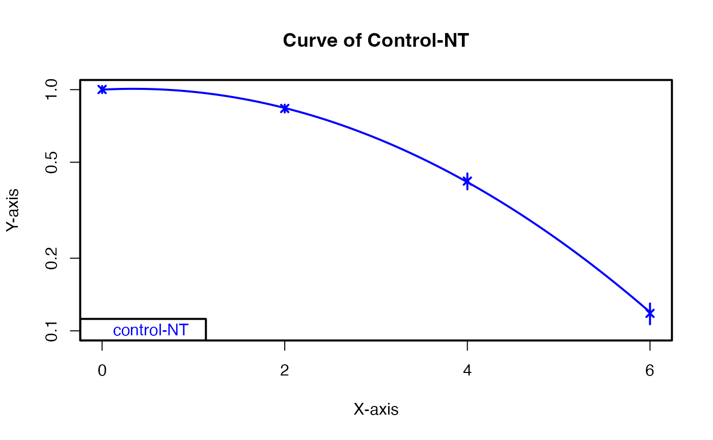
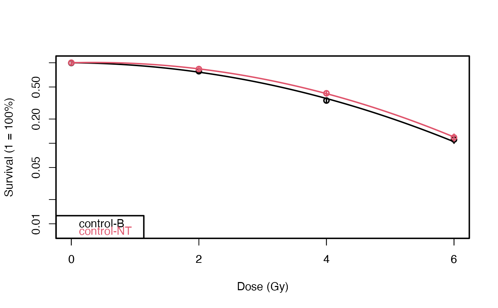
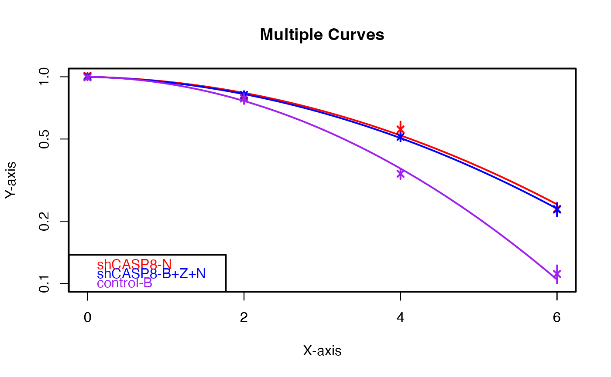

This is one of the two functions that helps to plot the cell survival curves.
It plots the curves, both for one cell type or multiple cell types, without
having the user go through the data wrangling steps. It plots basic plots
returned by the plot.cellsurvLQfit
function. The recommended function for plotting the cell survival curves is
the ggplotCSCurve, though, as it uses
ggplot to plot the curves, and allows a lot of
customization.
Usage
plotCSCurve(
data,
...,
method = "ml",
PEmethod = "fit",
col = NULL,
xlim = NULL,
ylim = c(0.008, 1),
xlab = "Dose (Gy)",
ylab = "Survival (1 = 100%)",
title = NULL,
pch = 1
)Arguments
- data
A data frame containing at least the following five columns: "cline", "Exp", "dose", "ncells", "ncolonies".
- ...
The name of the cell type(s)/group(s). If entering multiple cell types, separate each by a comma.
- method
Method used for the fit. It's
"ml"(maximum likelihood) by default. Can be"ls"(least squares) or"franken"(weighted least squares as described by Franken eta al.(2006)).- PEmethod
Controls the value of the plating efficiencies.
"fit"calculates fitted plating efficiencies as model parameters,"fix"uses fixed ones calculated from the observed zero dose.- col
A vector of strings denoting the colors of the curves. Size of the vector should be equal to the number of cell types entered.
- xlim
A vector denoting the limits of x-axis.
- ylim
A vector denoting the limits of y-axis.
- xlab
A string denoting the label of x-axis.
- ylab
A string denoting the label of y-axis.
- title
A string denoting the title of the plot.
- pch
An integer denoting the shape of the points in the plot.
Examples
datatab <- CASP8_data
# Single curve
plotCSCurve(datatab, "control-B")
plotCSCurve(datatab, "control-NT", col = "blue", pch = 4, ylim = c(0.1, 1),
xlab = "X-axis", ylab = "Y-axis", title = "Curve of Control-NT")

# Multiple curves
plotCSCurve(datatab, "control-B", "control-NT")

plotCSCurve(datatab, "shCASP8-N", "shCASP8-B+Z+N", "control-B", col = c("red", "blue", "purple"),
pch = 4, ylim = c(0.1, 1), xlab = "X-axis", ylab = "Y-axis", title = "Multiple Curves")
